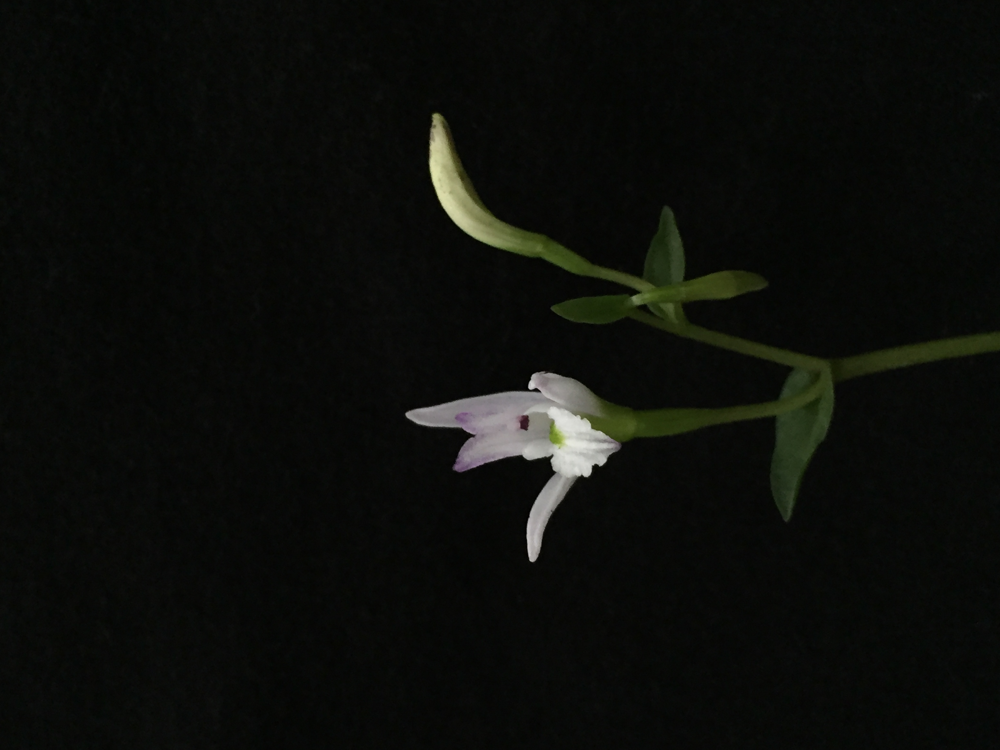
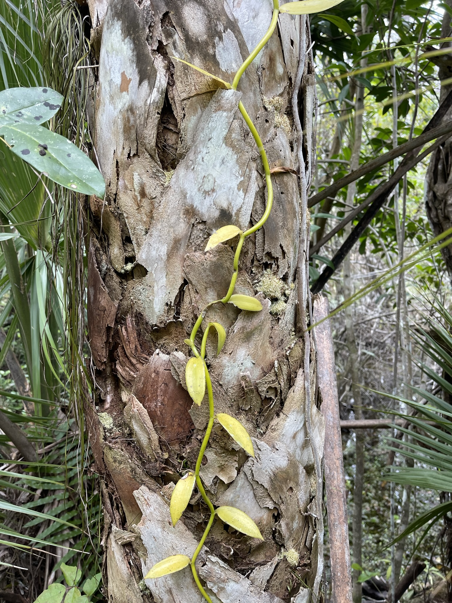
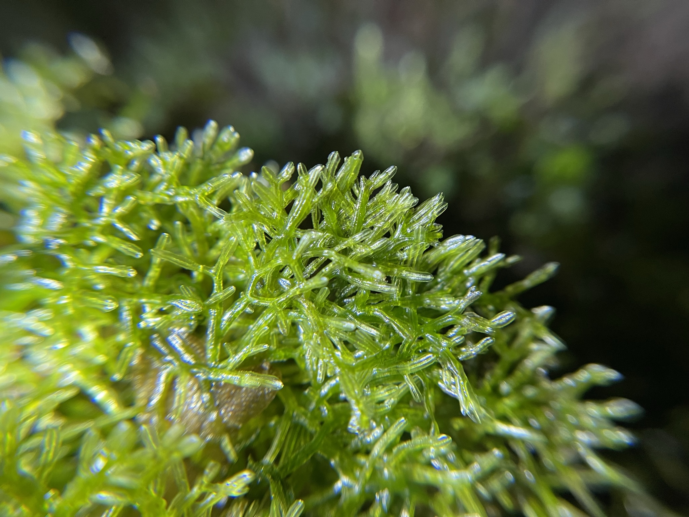
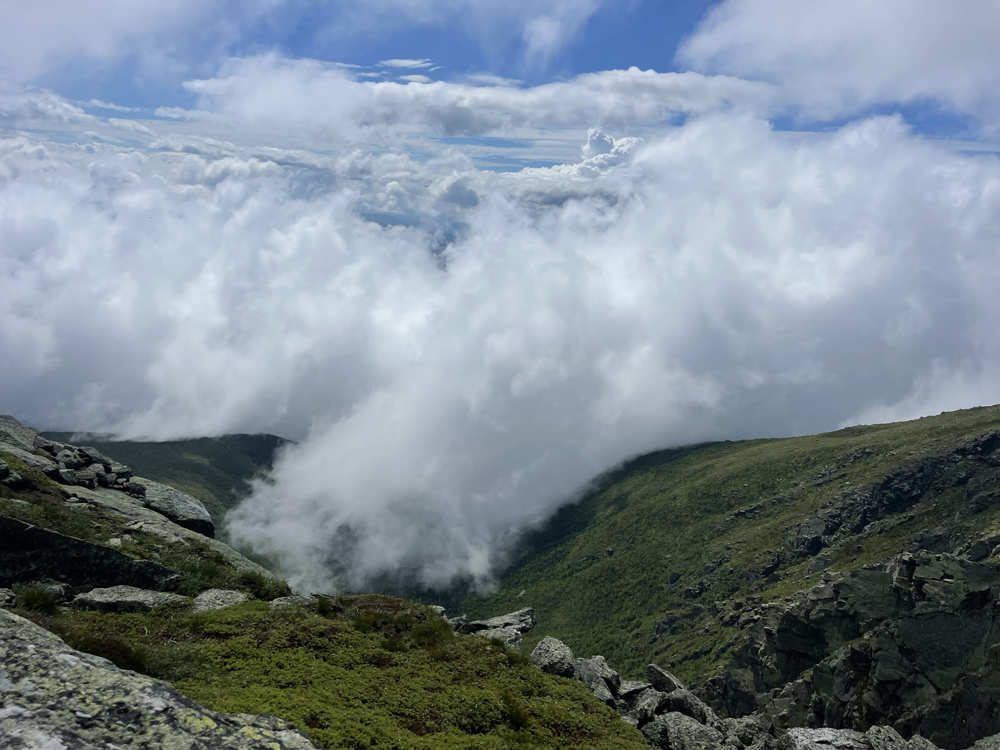

Research
My research spans the diversity, evolution, and ecology of plants, especially orchids and bryophytes. Much of my work has centered on how plants interact with other organisms and their environments, from the evolutionary consequences of fungal nutrition in orchids to the diversity and distribution of plants across North American landscapes. I approach these questions using field collections, natural history specimens, molecular and phylogenetic methods, stable isotope analysis, and ecological and biodiversity data.
Research Areas
Trophic Mode Evolution in Orchids

Orchids are particularly interesting for their relationships with fungi. They rely on fungal partners during germination and early development, and some species continue to obtain part or all of their carbon from fungi as adults. My doctoral research at the University of Wisconsin–Madison investigated the evolution and ecology of these nutritional strategies, with an emphasis on partial mycoheterotrophy in North American orchids.
Using stable carbon and nitrogen isotopes alongside ecological and phylogenetic information, I investigated variation in orchid trophic modes across the flora of Wisconsin and the broader Great Lakes region. This work explores the continuum between photosynthetic carbon acquisition and fungal-derived nutrition, and what it can tell us about the evolution of plant–fungal relationships.
Fungal Associations of North American Orchids
Which fungi associate with orchids, and how flexible are these relationships across species and localities? I have used fungal DNA metabarcoding and molecular identification to study orchid-associated fungal communities, with particular emphasis on the three birds orchid, Triphora trianthophoros.
This work examines variation in fungal associations and the potential importance of saprotrophic fungi in orchid nutrition. It complements my stable isotope research by connecting patterns of carbon acquisition with the identities and ecological roles of fungal partners.
Plastome Evolution in Mycoheterotrophic Plants

The evolution of heterotrophic nutrition can have far-reaching consequences for the plastid genome. My research has examined patterns of plastome evolution and gene loss among orchids with different trophic strategies, especially within Vanilloideae, a lineage that includes both photosynthetic and mycoheterotrophic species.
Using organellar genome assembly, sequence analysis, and phylogenetic approaches, I am interested in how reductions in photosynthetic dependence relate to changes in plastid gene content and genome structure.
Bryophyte Diversity, Floristics, and Biogeography

Mosses, liverworts, and hornworts make up an extraordinarily diverse but often overlooked component of North American floras. My bryological interests include floristic inventories, specimen-based taxonomy, patterns of geographic distribution, and the documentation of uncommon or poorly known species.
I have worked with bryophyte collections and field records in the Great Lakes region and the Southeastern United States. In particular, I am interested in the diversity and endemism of bryophytes in the North American Coastal Plain. My floristic work has also included a record of the liverwort Plagiochasma crenulatum in Florida, presented at the 2026 Hugo L. Blomquist Bryological and Lichenological Foray.
Alpine Plant Ecology and Elevational Gradients

My collaborative research has also explored how plant communities and functional traits change across elevational gradients. On Mount Washington, New Hampshire, I have contributed to studies of woody plant diversity, leaf habit, functional and phylogenetic community structure, and foliar chemistry. These projects examine how vegetation changes from lower-elevation forests toward alpine environments.
Related field experience includes population and demographic surveys of rare Arctic- and alpine-disjunct plants on Isle Royale, Michigan. This work brought together field identification, quantitative measurements, and long-term botanical records.
Floristics, Herbarium Collections, and Biodiversity Data
Natural history collections and field observations are fundamental to much of my work. At the Wisconsin State Herbarium, I contributed to vascular plant and bryophyte collections, floristic surveys, and treatments for the Wisconsin Flora. I have also worked with colleagues on peatland plant community surveys and educational research through the Students and Water in Wisconsin’s Peatland Plant Communities project.
I'm particularly interested in combining physical specimens with digitized herbarium records and community-contributed biodiversity observations, including iNaturalist and other public data resources. These sources can help document plant distributions, revisit historical records, identify gaps in botanical collecting, and make floristic information more useful for research and education.
Paleobotany and Early Flowering Plants
My undergraduate research at the Florida Museum of Natural History introduced me to fossil plants and the early evolution of flowering plants. Working with paleobotanical collections, I used specimen imaging and microscopy, including X-ray microtomography, to investigate fossil plant morphology.
This work contributed to the description of Dakotanthus, an early eudicot flower and fruit from the Cretaceous Dakota Formation of Kansas and Nebraska, published with collaborators in Acta Palaeobotanica (2018).
Conference Presentations and Sessions
Selected contributed presentations, posters, and conference sessions. An asterisk indicates the presenter, following my CV.
Contributed Presentations
- 2026 — Corder, B.* “Plagiochasma crenulatum Gott. (Marchantiophyta, Aytoniaceae) new to Florida.” Hugo L. Blomquist Bryological and Lichenological Foray, Swainsboro, Georgia.
- 2026 — Feist, M. A.*, Corder, B., Johnson, H., Niemuth, S., Vaas, A., Baughman, S., Klingert, T., Kempfer, C., Shumaker, T., Wefferling, K. “Students and Water in Wisconsin’s Peatland Plant Communities.” Wisconsin Wetlands Conference, Baraboo, Wisconsin.
- 2025 — Corder, B.*, Cameron, K. “(Fungal) Friends in Low Places: Fungal metabarcoding reveals saprotrophic associations in a rare North American orchid.” Botanical Society of America Conference (Botany 2025), Palm Springs, California.
- 2024 — Corder, B.*, Cameron, K. “Uncovering hidden mycoheterotrophs in the orchid flora of Wisconsin.” Botanical Society of America Conference (Botany 2024), Grand Rapids, Michigan.
- 2023 — Corder, B.*, Cameron, K. “Partial mycoheterotrophy and fungal associations of Triphora trianthophoros, a rare North American orchid.” Botanical Society of America Conference (Botany 2023), Boise, Idaho.
- 2022 — Corder, B.* “Partial mycoheterotrophy in orchids: Its evolution, ecology, and biogeography.” Native Orchid Conference, Port Angeles, Washington.
Posters
- 2026 — Corder, B.*, Johnson, H., Niemuth, S., Klingert, A., Feist, M. A. “Bridging the Gap: Historical insights from 185 years of Sphagnum moss collections in Wisconsin peatlands.” Wisconsin Wetlands Conference, Baraboo, Wisconsin.
- 2026 — Baughman, S.*, Kligert, T., Powell, A., Corder, B., Feist, M. A., Wefferling, K. “Place-based peatland community trailside guide development.” Wisconsin Wetlands Conference, Baraboo, Wisconsin.
- 2016 — Corder, B.*, Lahav, S., Scola, D., Orr, J., Burtscher, W., Holiman, E., Payton, A., McDaniel, S. “Building a toolbox for authentic undergraduate research experiences in evolutionary genetics using the sexually dimorphic moss Ceratodon purpureus.” Evolution 2016, Austin, Texas.
Organized and Co-organized Sessions
- 2024 — Charton, K., Anderson, S., Taylor, L., Chan, P., Corder, B., Givnish, T., Tourville, J., Peyton, M., Berry, L., Wintermute, T., Kiel, N. “From temperate deciduous forest to alpine tundra: Elevational gradients in plant form and function on Mt. Washington, New Hampshire, USA.” Ecological Society of America Conference (ESA 2024), Long Beach, California.